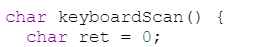
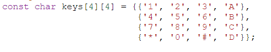
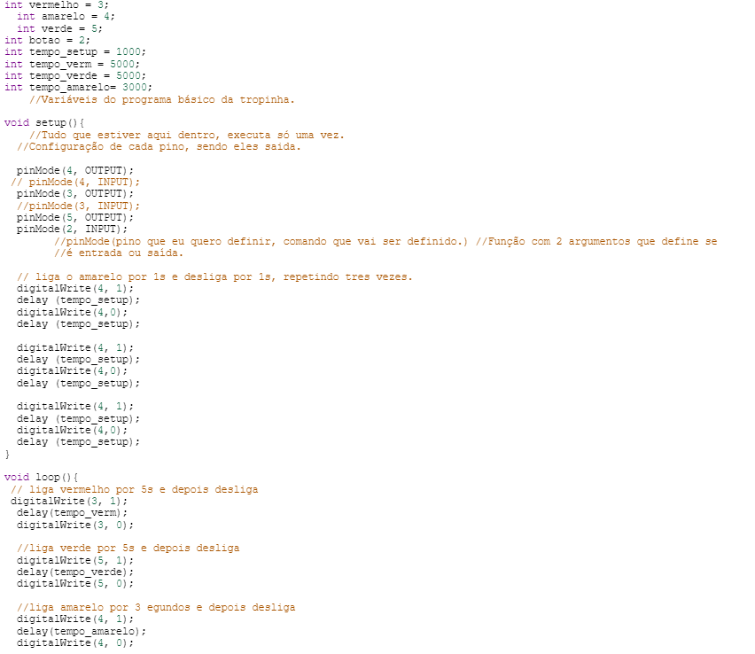

Sobre a IDE utilizada - Thinkercad
Biblioteca de Componentes: O Tinkercad oferece uma ampla variedade de componentes eletrônicos, incluindo resistores, LEDs, transistores, sensores, entre outros. Você pode adicionar esses componentes ao seu projeto arrastando e soltando-os na área de trabalho.
Placas Arduino: O Tinkercad inclui várias placas Arduino virtuais que você pode usar em seus projetos. Você pode programar essas placas usando uma interface visual baseada em blocos ou escrevendo código em C/C++.
Simulação de Circuito: Uma vez que você tenha criado seu circuito, você pode simulá-lo para ver como ele se comporta. Isso inclui a simulação da interação entre os componentes, como o acionamento de um LED por um Arduino, por exemplo.
Visão sobre seus códigos
void setup(): Esta função é chamada uma vez quando o programa começa a ser executado. É geralmente usada para configurar pinos, iniciar comunicações serial, inicializar variáveis, etc.
void loop(): Esta função é executada continuamente depois que o void setup() é concluído. Ela é responsável por executar o código principal do programa, como ler sensores, processar dados e controlar saídas.
Comandos de controle de fluxo: Assim como em outras linguagens de programação, você pode usar comandos de controle de fluxo, como if, else, for, while, switch, etc., para controlar o fluxo do programa.
Comunicação Serial: Você pode usar funções como Serial.begin() e Serial.print() para comunicação serial com o computador ou outros dispositivos.
Funções de leitura e escrita de pinos: O Tinkercad Arduino oferece funções para ler e escrever valores nos pinos do Arduino, como digitalWrite(), digitalRead(), analogWrite() e analogRead().
Funções do Arduino
digitalWrite(pin, value): Esta função é usada para escrever um valor digital em um pino específico do Arduino. O valor pode ser HIGH (1) ou LOW (0), representando níveis de tensão de 5V ou 0V, respectivamente. digitalWrite(pin, HIGH) configura o pino para o nível de tensão de 5V (alta) e digitalWrite(pin, LOW) configura o pino para o nível de tensão de 0V (baixa).
Exemplo: Para ligar um LED conectado ao pino 13, você usaria digitalWrite(13, HIGH); para desligar o LED, usaria digitalWrite(13, LOW).
digitalRead(pin): Esta função é usada para ler o estado digital de um pino específico do Arduino. Ele retorna HIGH (1) se o nível de tensão no pino for de 5V e LOW (0) se o nível de tensão for de 0V. Você pode usar digitalRead(pin) para ler o estado do pino e tomar decisões com base nesse estado.
Exemplo: Você pode usar digitalRead(2) para ler o estado do pino 2 e tomar uma ação com base nesse estado.
analogWrite(pin, value): Esta função é usada para gerar sinais PWM (Modulação por largura de pulso) em um pino específico do Arduino. Ela permite controlar a intensidade de saída em pinos PWM, como o controle de brilho de LEDs ou a velocidade de um motor. analogWrite(pin, value) aceita um valor entre 0 (sem saída) e 255 (saída máxima). O valor determina o ciclo de trabalho do sinal PWM, onde 0 significa 0% de ciclo de trabalho (sem saída) e 255 significa 100% de ciclo de trabalho (saída máxima).
Exemplo: Para ajustar o brilho de um LED conectado ao pino 9, você pode usar analogWrite(9, 128) para definir o LED em aproximadamente 50% de brilho.
analogRead(pin): Esta função é usada para ler um valor analógico de um pino específico do Arduino. Ela converte a tensão analógica presente no pino em um valor digital que varia de 0 a 1023, representando uma faixa de tensão de 0V a 5V. analogRead(pin) aceita como argumento o número do pino analógico que você deseja ler. O Arduino possui vários pinos analógicos, geralmente marcados com "A0", "A1", etc.
Exemplo: Se você conectar um potenciômetro a um pino analógico do Arduino e girar o potenciômetro, você pode usar analogRead() para ler os diferentes valores de tensão produzidos pelo potenciômetro. Por exemplo, int valor = analogRead(A0); irá ler o valor analógico do pino A0 e armazená-lo na variável valor.
Variavéis Locais
Variáveis locais são definidas dentro de uma função e só podem ser acessadas dentro do escopo dessa função. Elas são criadas quando a função é chamada e finalizada quando a função é concluída.
Exemplo: Para ligar um LED conectado ao pino 13, você usaria digitalWrite(13, HIGH); para desligar o LED, usaria digitalWrite(13, LOW).
Uso: Variáveis locais são úteis quando você precisa armazenar dados temporários que só serão usados dentro de uma determinada função.
Exemplo:
Constantes
Constantes são valores que não podem ser alterados durante a execução do programa. Elas são definidas usando a palavra-chave const.
Constantes são úteis para definir valores que não devem ser alterados acidentalmente e para tornar o código mais legível.
Exemplo:
Blink e sua estrutura
Configuração Inicial (void setup()): No Arduino, o void setup() é chamado apenas uma vez quando o programa começa a ser executado. É onde você configura o ambiente do seu programa, como definir os modos dos pinos.
No exemplo Blink, o void setup() é usado para definir o pino do LED como uma saída, indicando que ele será usado para enviar sinais para o LED.
Loop Principal (void loop()): O void loop() é executado continuamente após o void setup(). Ele contém o código principal do seu programa, que será repetido indefinidamente até que o Arduino seja desligado.
No exemplo Blink, o void loop() é usado para ligar e desligar o LED em intervalos específicos. Isso cria o efeito de piscar do LED.
Exemplo de código:
int vermelho = 3; define o pino do LED como um inteiro, que é atribuída ao valor 3.
pinMode(3, OUTPUT); configura o pino do LED como uma saída no void setup().
digitalWrite(3, 1); liga o LED, pois escreve um sinal alto (5V) no pino do LED.
delay(tempo_verm); é uma variavel que, pausa a execução do código por 5000 milissegundos (1 segundo).
digitalWrite(3, 0); desliga o LED, pois escreve um sinal baixo (0V) no pino do LED.
delay(tempo_setup); é uma variavel que, pausa a execução do código por mais 1000 milissegundos.
Acesse as Atividades aqui:
Atividade Semáforo:
Lista de Exercícios Automação Industrial:
Lista de Exercícios Arduino 2: